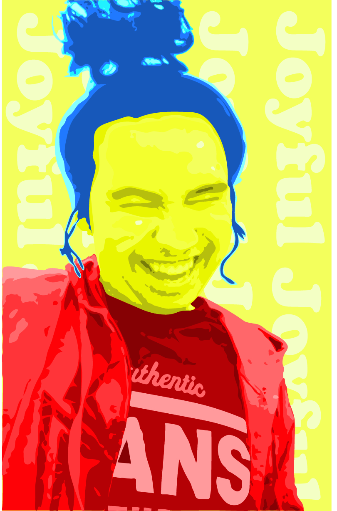

Hi my name is Nicholas Bryan. I am a senior at the University of Arkansas at Little Rock going for my Bachelor's degree in Information Science. I have job experience that taught me a couple of soft skills, which are communication, adaptablity, and dependability. I have experience in a couple of programing languages, which are HTML, Javascript, mySQL, and C++.
I am looking for an IT job to be a technican or specialist. I am looking for the job to be physically active than being behind a screen all day where I can help out others with computer or network issues and running cables around the building. Being able to organize and have good synergy is what I strive for in a job.
I am eager to find a job within my degree of study, so I can get my career up and running.
Sheridan High School, Sheridan, AR
Pulaski Technical College, Little Rock, AR
University of Arkansas at Little Rock, Little Rock, AR
You can download my resume in full either in Google Doc or PDF format.
Dear Potential Employer,
I am interested in a position within your company. I think I would be a great fit for this position. I have job experience of 4 years, while trying to get my Major in Information Science. Right now, I am working at Fedex Grounds and attending at the University of Arkansas at Little Rock. I am hardworking, adaptive, and reliable and I will be committed to getting the job done. I also have experience with a couple of programming languages, which include Javascript, html, and C++. I saw the company's job opening on linkedin.com. I am looking forward to hearing from you soon.
Thank you for your time
Sincerely,
Nicholas Bryan
19311 M and M Lane
Little Rock, AR 72206
(501) 351-9391
nbryan938@gmail.com
This Writing example is from a business class called Management Info Resources, in which UALR had a cyberattack and I was to help provide what to do to prevent this from happening again as an assignment for this class.
Assignment 1This writing example was for a Legal Business Enviromnent class where you find a case from the U.S. and do a Case Brief on the case in detail for the project.
Case BriefThis is an assignment from Capstone 1 where you are suppose to recreate a webpage as close as possible and answer the questions.
HTML-CSS-Review-AssignmentThis is homework from Web Client Applications where you create a simple interface for entering information about the user. Also, the last question is a simple game with pop-ups.
IFSC3300HW11NB.htmlThis is an exam from Systems Develop Method where we had to show what rules would apply to the system design. Then show what it would look like with the keys included.
Exam 2This is an exam from Systems Develop Method where we had to create a use case diagram and a class diagram as well. w
Exam 3This is an assignment from Capstone 1 where you create a simple calculator using java.
JavaScript-Calculator-AssignmentThis is an assignment from Capstone 1 where you get an API key from polygon.io to get data on current currency cost compared to other currencies. You will select a currency you want converted to another currency with a start date and end date (it is finicky with the dates, so try 4/20/25 to 4/26/25).
Currency-Value-History-AssignmentThis is an assignment fromm Systems Develop Method where we created a case diagram with descriptions and then make a use case diagram with the given cases.
Case DiagramThis is an exam from Systems Develop Method with two different questions. The first one had us create a graph to show time for each activity until the project is done and answer the questions about the time for each activity. Next question was to create a diagram for a shipping company.
Exam 1This is the project from Capstone 1. We had to create a charter from a fake interview where the person needs a website for their skin care treatment patients to see the UV ray forecast to help them keep track of how much UV rays they got per day.
Project Charter or Project Charter downloadThis is part of the same project, but we had to give an analysis based on our charter and information from the interview.
Project Analysis or Project Analysis downloadThis is the design part of the project where we had to give design details of the website to even see if it is possible to be made and how it would look.
Project Design or Project Design downloadThis art example was from Computer Applications in Art. We had to use a picture of a friend or family to make it black and gray and decrease the resolution. Then we colored over it with only three colors and their shades.
